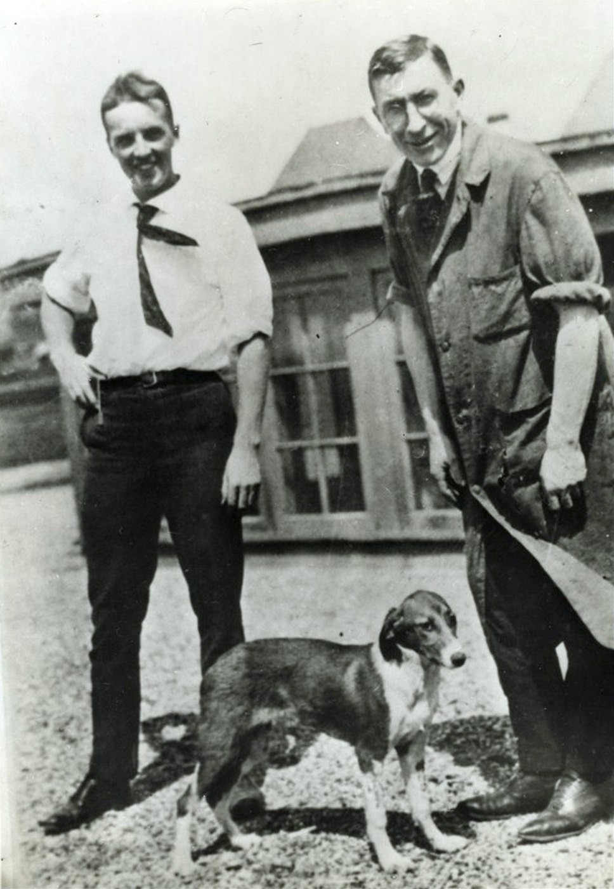
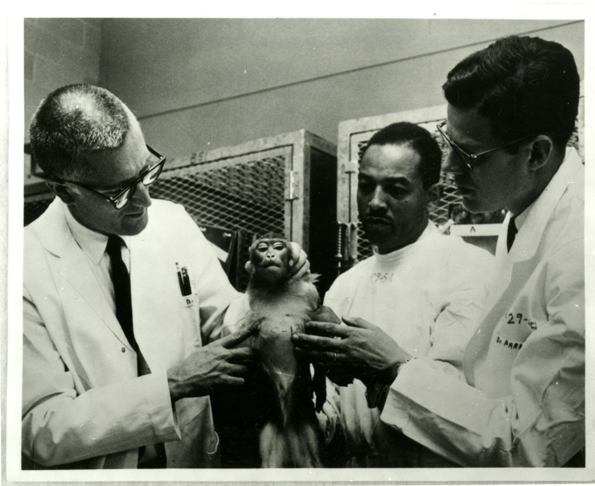
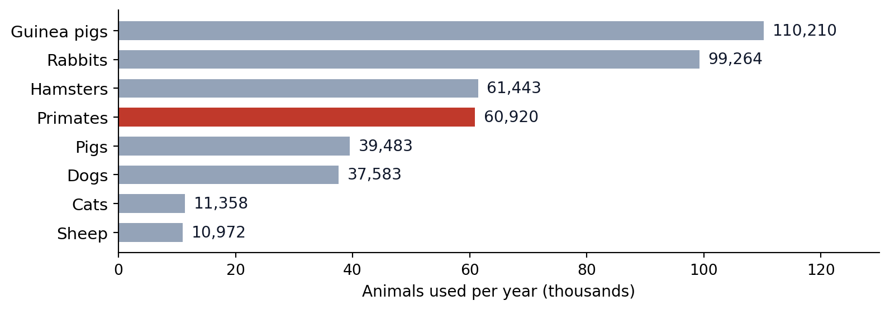
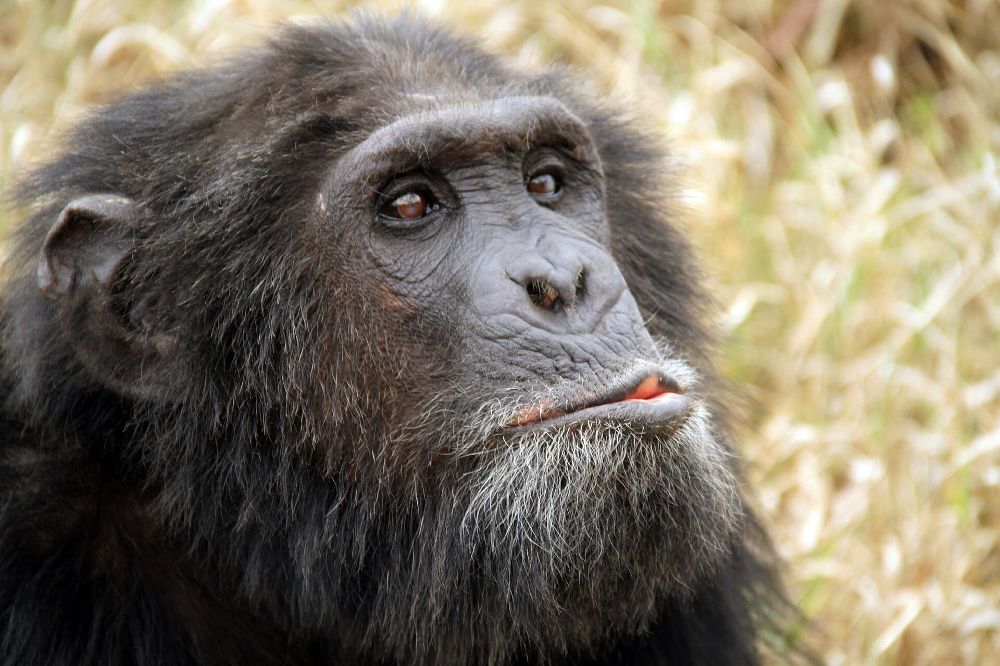

Part A: Moral Status of Animals and the Ethics of Research
An Introduction to Bioethics.
You just joined your hospital’s animal-research committee. Your first protocol asks to test a new painkiller, one that could help your own patients. The plan: first in mice, then, if it works, in a small group of monkeys, who will be euthanized at the end so their nerve tissue can be studied.
You will give this drug to patients someday if it passes. Tonight you vote on whether it gets made.
Note
Most people who use a medicine without a second thought hesitate when asked to approve the research behind it. That hesitation is not hypocrisy. It is two real duties pulling apart: a duty to the patients who need the drug, and a duty to the animals who pay for it.
This lecture gives you tools to hold both at once: a way to ask which animals matter, how much, and what that permits, instead of choosing a slogan and defending it.
By the end of Part A, you will be able to:
Before we ask how to treat animals, we need a prior idea: moral status.
Pick a criterion and you have, without noticing, sorted every living thing into “counts” and “doesn’t.”
In 1970 the psychologist Richard Ryder coined speciesism; Peter Singer made it famous (Singer 1975).
The charge
Giving less weight to a being’s interests just because of its species is like racism or sexism: a bias for “our own kind” dressed up as a principle. A pig’s pain is as real as a person’s.
The reply
Species membership does track real differences: rationality, moral agency, belonging to a moral community. Whether that reply works is what the rest of this section argues about.
The hardest problem for any view that draws the line at rationality.
The argument doesn’t settle the debate. It forces every side to say exactly why its line falls where it does.
Kant: duties about animals (Kant 1997)
Korsgaard: Kant, repaired (Korsgaard 2018)
The Equal-Consideration Argument
After Peter Singer, Animal Liberation (1975)
What follows (Singer 1975)
Tom Regan: animals have rights (Regan 1983)
Many animals are subjects-of-a-life: they have beliefs, desires, memory, and a future that matters to them. Such beings have inherent value and a right not to be used merely as a means. So research on them is wrong, even when it helps many. Rights are not for trading.
Carl Cohen: rights need a moral community (Cohen 1986)
Rights arise among beings who can make moral claims on each other. Animals can’t recognize duties, so they hold none. Favoring our own species is like favoring our own children: moral, not bias. So humane, regulated research is a moral good.
Cohen’s soft spot is the marginal cases. He answers that rights belong to humans as a kind, even those who can’t exercise them. Is that a principle, or speciesism with better manners?
| Eating meat | Animal research | Pets | Wildlife | |
|---|---|---|---|---|
| Kant / Cohen | permitted | permitted, even good | fine if not cruel | manage for human use |
| Singer | wrong (factory farms) | only if benefit clearly outweighs | fine if welfare met | reduce suffering overall |
| Regan | wrong | wrong, full stop | guardianship, not ownership | respect, don’t exploit |
| Korsgaard | deeply troubling | rarely justified | a real relationship of duty | owed direct concern |
Read across a row to see a view’s reach; read down a column to see how much a verdict depends on the theory behind it.
A wildfire is closing in. In one shelter are five dogs; in another, one human stranger. You have time to open only one door before the fire arrives.
The science keeps moving the line. Primatologist Frans de Waal documented chimps that plan, deceive, and grieve; later work found that octopuses, which are invertebrates, show problem-solving and apparent pain responses (Waal 2016).
In 2022, after a government-commissioned scientific review, the United Kingdom’s Animal Welfare (Sentience) Act recognized octopuses, crabs, and lobsters as sentient.
Note
A distinction the views above quietly rely on: moral agents vs. moral patients.
A moral agent can be held responsible: it can have duties, deserve blame, make claims. A moral patient cannot act morally but can still be wronged (a newborn, a dog). Cohen ties rights to agency; Regan and Korsgaard insist patients matter regardless.
That is why smart people reach opposite verdicts from the same facts: they disagree about whether being a patient is enough to be owed direct duties.
For this audience, the stakes are on your med cart.
The ethical question is not whether research helped us, but what it costs, and whether each use is justified.

Charles Best and Frederick Banting with a dog from the insulin experiments, Toronto, 1921. Library and Archives Canada. Public domain.
Important
Silver Spring, Maryland, 1981
Alex Pacheco volunteered in Edward Taub’s lab, which severed nerves in macaques’ limbs to study recovery. He photographed filthy cages and untreated wounds and took them to police.
Taub was convicted on one count of denying a monkey veterinary care. In 1983 Maryland’s highest court reversed: the state cruelty law, it ruled, did not reach federally regulated research. The photos launched PETA.
Important
Harry Harlow, 1950s–60s
Harlow raised infant monkeys in isolation to study attachment. Deprived of mothers, they clung to cloth dummies, and many were left severely, permanently damaged.
The work changed how orphanages and hospitals cared for infants. It is also, to many, suffering no result could justify.
The question both leave: how much harm may knowledge cost, and who decides?
In 1959, two British scientists proposed the framework that still governs humane research (Russell and Burch 1959). The goal is not to end research but to shrink its harm at every step.
| R | The question it asks | A concrete move |
|---|---|---|
| Replacement | Could this be done without animals? | cell cultures, organoids, computer models, human volunteers |
| Reduction | Are we using too many? | better statistics; sharing tissue across studies |
| Refinement | Are we causing avoidable harm? | anesthesia, pain control, humane endpoints, enrichment |
A humane endpoint ends a study, and the animal’s life, before suffering peaks, rather than waiting for death as the data point.
Research is a cost-benefit trade. But a benefit you don’t get can’t justify a harm.
About 9 in 10 drugs that enter human trials, after testing largely in animals, never win approval, mostly for lack of effect or for toxicity (Sun et al. 2022).
That is the translation gap. It doesn’t make research worthless; it raises the burden of proof.
The question is now how fast to replace, and who bears the risk of moving too soon.
A lung-on-a-chip, lined with living human cells. Wyss Institute, Harvard, via NIH-NCATS. CC BY 2.0.
After Silver Spring, 1985 amendments to the Animal Welfare Act required every research institution to have an IACUC (Institutional Animal Care and Use Committee).
| IRB (humans) | IACUC (animals) | |
|---|---|---|
| Protects | the research subject | the research animal |
| Core consent question | did the subject agree? | (animals can’t consent) |
| Substitute safeguard | informed consent, voluntariness | the 3 Rs, veterinary oversight |
| Shared engine | weigh benefits vs. harms; independent review; no self-policing | same |
The deepest difference is consent. A human can refuse; an animal never can. So the moral weight an IRB places on agreement shifts, for animals, onto someone else minimizing their harm.
On every criterion any theory uses (sentience, subject-of-a-life, a good of one’s own), primates score high.

NIH scientists Harry Meyer Jr. and Paul Parkman and technician Rudyard Wallace examine a laboratory monkey during rubella vaccine research, 1966. NIH, via National Library of Medicine. Public domain.

The chart hides the biggest fact: mice and rats bred for research, by far the most-used animals, and fish are excluded from the law, so no one counts them officially (USDA APHIS 2026).
Important
The end of invasive chimp research in the U.S.
In 2011 the Institute of Medicine concluded that almost all biomedical research on chimpanzees was no longer necessary: alternatives had caught up (Institute of Medicine 2011). In 2015 NIH announced it would retire its remaining research chimpanzees, ending federal support for invasive chimp studies (National Institutes of Health 2015).
Chimps had helped develop the hepatitis B vaccine. The judgment was not that they never helped, but that the benefit no longer justified the cost. Replacement succeeded.

Valentina Storti, via Wikimedia Commons. CC BY 2.0.
You are back on the IACUC. A respected neuroscientist submits a protocol: implant electrodes in the brains of four macaques to study how memory forms. The work could, in a decade, help patients with Alzheimer’s. The monkeys will live in the lab for years and be euthanized at the end.
Note
A distinction that cuts through most research debates: necessary vs. avoidable suffering.
Almost everyone agrees we may not impose avoidable suffering. The fight is over “necessary”: necessary for what, and judged by whom? The chimp decision turned on a finding that the suffering had become avoidable, because alternatives existed.
So progress in the 3 Rs doesn’t just make research kinder. It shrinks the set of harms that can still be called necessary, and raises the bar every new protocol must clear.
We began with a vote and a hesitation: we use the fruits of animal research while flinching at approving it. Behind the flinch is a real question, which beings have moral status, and how much, that Kant, Korsgaard, Singer, Regan, and Cohen answer very differently. In the lab, the 3 Rs try to shrink harm, the translation gap raises the burden of proof, and the IACUC enforces the rules. The chimp retirement shows the system moving: as alternatives improve, fewer harms count as “necessary.” Next: the food system, and pigs grown for human organs.
Paired case: David Bennett and the First Pig-Heart Transplant
Recall
State the three Rs and explain what an IACUC must verify before approving a study. Which R was decisive in the 2015 NIH chimpanzee decision?
Apply
A lab wants to test a cosmetic ingredient for skin irritation using rabbits. Run the proposal through Singer’s and Regan’s views, and through the first R. Where would each say the proposal fails or passes?
Debate
Cohen argues that favoring our own species is moral, not bias, like favoring our own children. Is the analogy sound? Defend your answer, using the argument from marginal cases.
Bioethics OER · CC BY-NC 4.0 · Brendan Shea